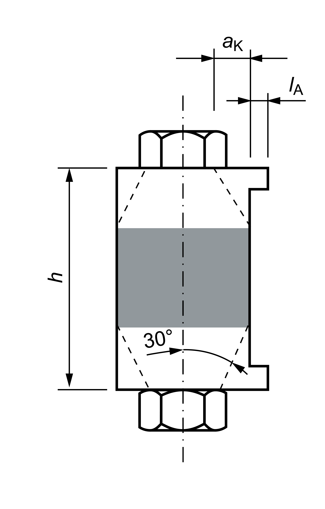

|
|
|


载荷施加
VDI 准则定义了计算载荷施加系数的公式。选择如图所示的配置。分界面必须位于灰色所示的范围内。被夹紧零件的长度 h、到连接件的距离 ak以及被连接实体的长度 lA（参见图 42.7）确定了载荷施加点的位置，因此也确定了载荷施加系数。
在单螺栓（螺纹孔）连接中，只有 SV1、SV2 和 SV4 配置可用。

图 42.6：按 VDI 2230（2015 版）所示的载荷施加系数定义配置。

图 42.7：按 VDI 2230（2015 版）所示的载荷引入系数定义输入。
Load application
The VDI guideline defines equations for calculating the load application factor. Select a configuration as shown in the figure 5ba0bcd87d0c9. The interface must lie within the range shown in gray. The length of the clamped parts h, the distance to the connection piece akand the length of the connected solid lA (see Figure 42.7) define the position of the application of load point and therefore also the load application factor.
In single-bolted (tapped thread) connections, only configurations SV1, SV2 and SV4 are available.
Figure 42.6: Configurations for defining the load application factor as shown in VDI 2230 (2015 edition).
Figure 42.7: Inputs for defining the load introduction factor as shown in VDI 2230 (2015 edition).